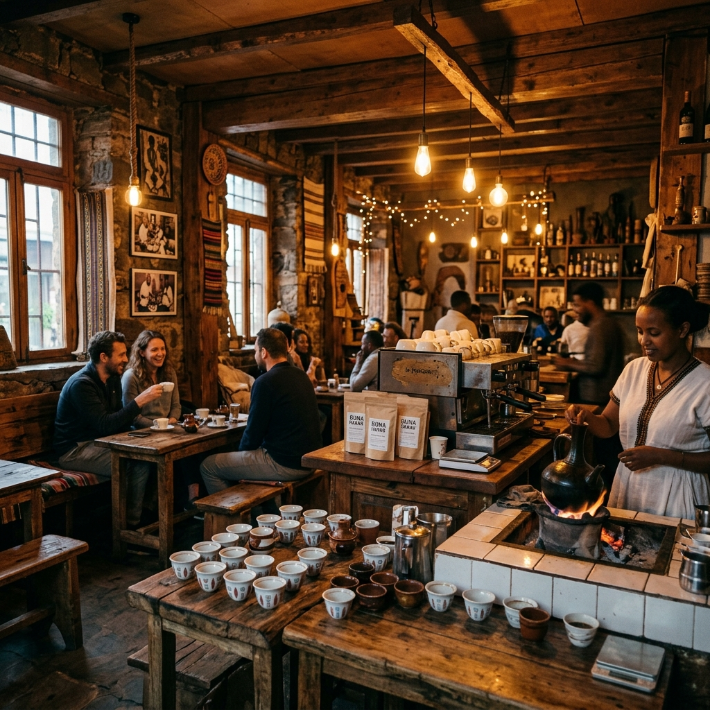

Est. 2018 · Addis Ababa
Our
Story.
From a single pour to a city ritual — the journey of Fili Coffee.
.jpg)
From a single pour to a city ritual — the journey of Fili Coffee.
Ethiopia is the birthplace of coffee. Every bean that passes through Fili's doors carries centuries of heritage. Our mission is simple: to honour that heritage with every single cup we serve — no shortcuts, no compromises.
We source directly from Ethiopian highland farmers in Yirgacheffe, Sidama, and Harrar, paying fair prices and building long-term relationships. From farm to cup, we know every step of the journey.
We know where every bean comes from. Direct-trade relationships with Ethiopian highland farmers ensure quality at the source.
From precise roasting to careful extraction, every step is intentional. Our baristas are artisans, not just staff.
Fili Coffee is a gathering place. A space where ideas are shared, friendships form, and the city slows down together.

.jpg)
.jpg)
.jpg)
Two locations. Same obsession with great coffee.